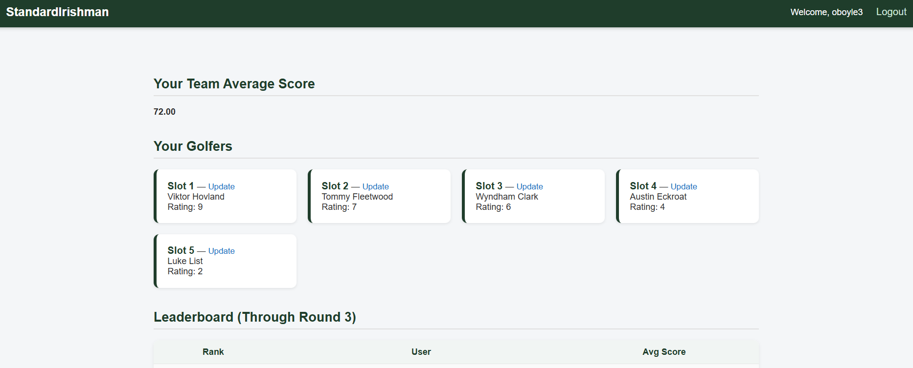

About Me
Strong in problem-solving and process improvement, with a track record of ensuring stability and performance in production environments. Comfortable functioning as a leader and establishing a strategic vision, or as a tenacious team member focused on tactical plan execution.
JPMorgan Chase & Co.
Role: Site Reliability Engineer
Wilmington, Delaware — February 2026–Present
SEI Investments
Role: IMS Technical Operations
Serve as a frontline technology operations analyst responsible for monitoring, triaging, and resolving production incidents in a high-availability fintech environment. Act as the first point of contact for system issues, investigating alerts and incident tickets to identify root cause, mitigate customer impact, and restore service as quickly as possible. Coordinate with engineering, infrastructure, and product teams during active incidents, providing clear communication, accurate escalation, and timely updates. Perform log analysis, data validation, and basic troubleshooting across applications, databases, and integrations to support incident resolution. Document incidents, resolutions, and recurring issues to improve operational processes and system reliability. Operate in a fast-paced, SLA-driven environment requiring strong attention to detail, calm decision-making under pressure, and consistent prioritization of critical issues.
Tools: Dynatrace · Kafka · Redis · Terraform · Linux · Rancher · Thycotic Secret Server · Remote Access (RDP, mRemoteNG, SuperPuTTY) · Atlassian Jira & Confluence · Grafana · Octopus Deploy · Swagger · Matumo · Citrix Studio/Admin · Windows Server Admin · Linux Server Admin · PagerDuty · Elastic · Azure · Insomnia · Disaster Recovery · SQL Server Management Studio ·
Example: Investigated a production issue where a source system update failed to modify the incremental timestamp used by a Kafka Source Connector, preventing updated records from being published and resulting in stale downstream data.
Philadelphia, Pennsylvania — July 2023-February 2026
American International Group
Role: General Insurance Intern
Jersey City, New Jersey — June 2022–August 2022
Equitable
Role: Customer Service Representative Intern
Secaucus, New Jersey — May 2021–August 2021
Equitable
Role: Operations Intern
Secaucus, New Jersey — May 2020–August 2020
Some of My Recent Projects
Master2026HeadtoHead


App that allows users to make predictions on 2026 Masters Golf Tournament and compare their selections with others. Built in python.
Check it OutBogey Management
App intended for private golf clubs allowing scheduling for caddies. Built using Dart/Flutter.
Check it OutAugusta Fantasy
App that allows users to make predictions on 2025 Masters Golf Tournament and compare their selections with others. Built in PHP on Apache web server.
Check it OutMasters Fantasy Golf
Python Django app that lets users select picks for the Masters, track and compare them with friends. Uses MariaDB.
Check it OutDjangoCrypt
Python Django app that lets users explore basic encryption concepts. Built with Django, running inside a Docker container.
Check it OutPremier League
A Django application that authenticates users, scrapes live Premier League standings, and presents a personalized dashboard.
Go Spurs!